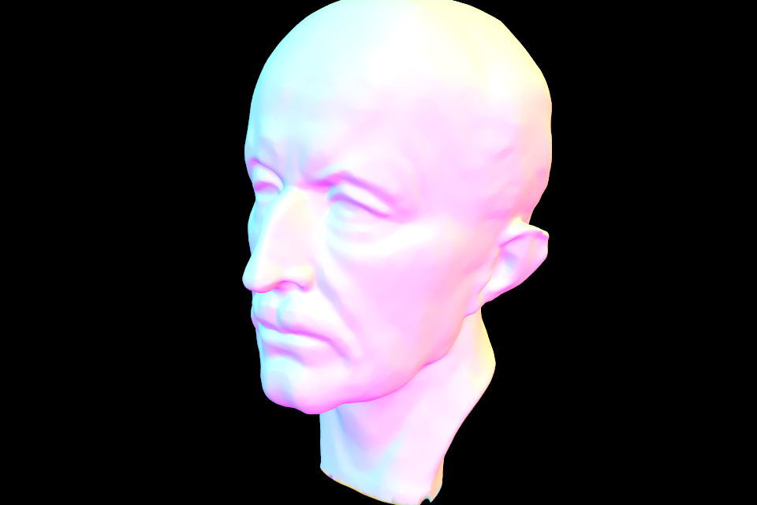
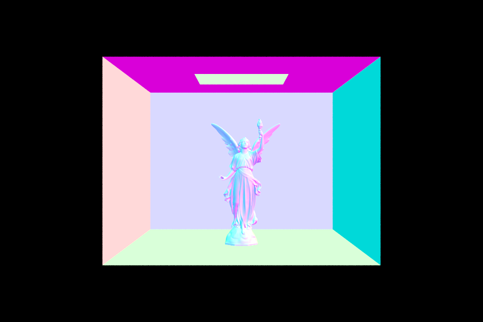
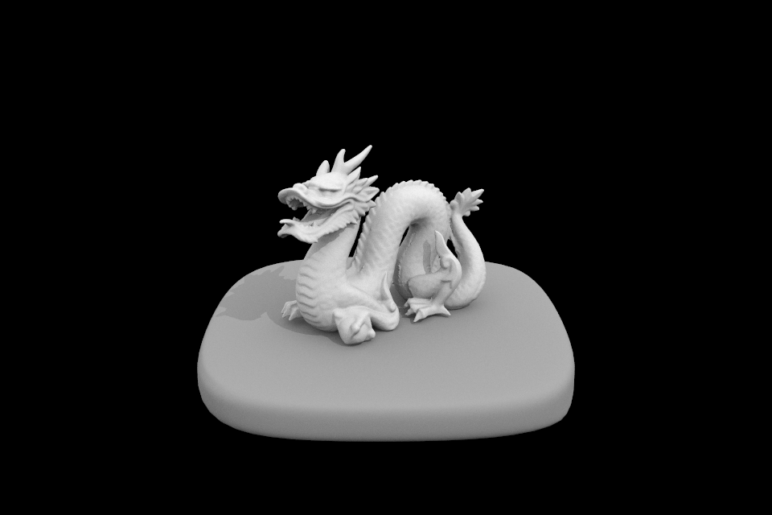
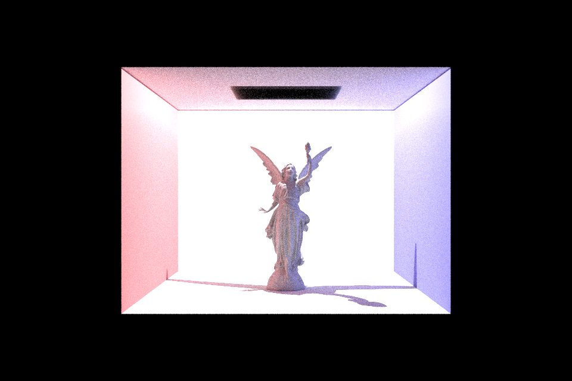

Path Tracer
George Geng
In this fun project, I implemented the core functionality of a path-tracing renderer! It explores and
relies on fundamental concepts in physics and computer graphics such as ray-casting and ray-scene intersections, ways to
accelerate ray-tracing, and lighting techniques for different materials (i.e. matte, mirror, glass) with the
bidirectional scattering distribution function (bsdf). By the end, I was able to trace and produce different
images from various .dae files, some composed of hundreds of thousands of primitives, along with different
lighting and material effects.
Part 1: Ray Generation and Intersection
The very first step in rendering a scene is to generate
rays throughout the image and then detect their intersections with any objects in the scene. Each pixel on the screen can be considered a little window, a hole in a mesh screen door through which we can cast generated rays. The representation of a ray in this project stores its origin and direction information in an origin vector a direction vector, as well as other information such as its depth.
The rays were first randomly generated
through each pixel, and then their combined radiances were used to estimate the irradiance of their corresponding pixel. However, the inputs
to this fucntion were integers corrsponding to pixel space, and the
$camera\text{->}generate\text{_}ray()$ method of the camera had to convert them to coordinates in camera space on the sensor plane, 1 unit behind the "pinhole" of our camera.
From there, their interesection with primitives—triangles and spheres—had to be tested for us to understand how the rays interacted with the scene itself, so that we could picutre the scene. A ray is represented by $\vec{o} + $ t$* \vec{d}$, where $\vec{o}$ and $\vec{d}$
are the origin and direction vectors. The equation of a plane containing a triangle
can be found with the normal and a point in the plane, and so we can solve for the
intersection point and use barycentric coordinates to see if it lies within the triangle, i.e. the ray intersects the triangle if the barycentric coordinates at the
point of intersection with the plane are between 0 and 1. A similar procedure underlies the test for seeing if a ray intersects a sphere. Specifically, we used the Moller-Trumbore algorithm for finding the intersection as well as the barycentric coordinates
of the point due to its relatively inexpensive number of operations.
It's important to note here that I had an error while testing the intersection with sphere—I was erroneously returning only the
minimum intersection, while I should have instead also checked to see if the maximum intersection was in-bounds when the minimum was not. This produced no visible errors until I tried to implement refraction for the glass material. Massive shoutout to based god Ben.
At this point, a few small .dae files can be displayed (with normals shading only).
This is because our implementation is inefficient and naive in testing for intersections with primtives, a task which we can yet accelerate.
 Spheres in a Cornell Box
Spheres in a Cornell Box
|
 Teapot Model
Teapot Model
|
 Coil Model
Coil Model
|
Part 2: Acceleration with BVHs
A BVH, or bounding volume hierarchy, is a tree in which each node is a "bounding box" structure
which holds our geometric primitives. Here, we add the ability to construct a BVH recursively from each mesh, which
greatly accelerates our ray trace. Now, instead of testing for intersections with every primitive, we can return
before reaching children primitives if the bounding volume of their parent is not hit.
Here, I implemented a top-down construction of BVH, by first forming a node and then seeing if it contains
less than or equal to the maxmium amount of primitives a leaf node (a node which has no children,
so that we can simply test for intersection by iterating through its contained primitives) is allowed to contain.
If not, then I take the extent (span between the minimum and maximum corners) of the box, choose the axis $x, y, z$
for which that value is greatest, and split the primitives into left and right groups based on if their centroid coordinate
is less than (left) or greater than (right) the midpoint along that axis. We continute until we reach the point where
the volume contains less than or equal to the maximum number of children a leaf is allowed to contain, and return from there.
In the case where one of the left or right children contains no primitives and the other one contains all of them after a
split, we run into infinite recursion because the node which receives all the children will never reach the base case. To resolve this
edge case, I test to see if one half contains all the primitives. If it does, then simply split all the primtiives into two different
vectors and recurse on them instead, setting the results of that recursion to the children instead.
Now, after constructing our BVH, we can find its intersection with the ray we cast. We can see if a ray intersects with a single bounding box volume by finding the six $x, y, z$ values where it interects with the planes which form the box, comparing them against each other to see if the intersection exists. Using this, we can rescursively find the intersections of a ray on a BVH. If it misses the outer
bounding box entirely, then we can return false. If we hit a leaf, then we iterate through the children, setting our intersect to
the nearest intersection point and returning true. This forms the base case. Otherwise, we can recurse on the left and right children, and
return the nearer intersection from there.
With this added functionality, now we can generate images out of really complicated meshes, as our tracing time goes from linear
to logarithmic!
|

Model of Max Planck's head, with tens of thousands of triangles!
|
|

Lucy Model, with hundreds of thousands of triangles!
|
Part 3: Direct Illumination
Here, I implemented a function for estimating the outgoing radiance at at a point on the surface hit by a ray to simulate direct lighting. It sums
over all the light sources in the scene and samples each light in a method
based on Monte Carlo integration. Additionally, a localized coordinate system at the point of intersection was first created, using the normal to define the $z$ axis, which would be useful for computing BSDFs later on.
While sampling each light, I obtained a probabalistically sampled unit vector pointing towards the light source and the distance to that light, which were used to find the direction and max $t$ respectively of a shadow ray.
By seeing if this ray intersected with anything before reaching the light, I was able to simulate shadows and darker regions in the image: only
return a non-black Spectrum if the shadow ray did reach the light. If so, I found the BSDF, attenuated by the cosine factor for lambertian shading, and multiplied by the color of the light to find a final irradiance. This was divided by the probability distributive function (as Monte Carlo integration requires, because we are sampling area light sources) and averaged by the number of samples.
This process was done for each light in the scene and the resulting spectrums were summed together, to produce the lovely direct lighting effect on these images!
|

Shaded dragon with Direct Illum
|
Now, the number of light rays we cast have a more noticeable effect, particularly around the shadows. Note
the noise around the shadows near the base of the bunny when we cast 16 rays pixel.
 Bunny Model, $s=16$
Bunny Model, $s=16$
|
Below is the same file, but rendered with 256 rays through each pixel. The noise around the shadow images has become particularly
less noticeable, and the image is smoother in general.
 Bunny Model, $s=256$
Bunny Model, $s=256$
|
The same scene with 64 rays through each pixel is shown here for reference. While the 256 sample is still noticeably smoother, the difference between 64 and 256 rays per pixel appears less pronounced than the visible difference bewtween 16 and 64. After a certain point,
our eyes may no longer be able to tell the difference!
 Bunny Model, $s=64$
Bunny Model, $s=64$
|
Part 4: Indirect Illumination
Next, to add indirect lighting, I added a function which
mutually recursed with $trace\text{_}ray$ to simulate the indirect lighting at a point after a ray hit. At the intersection point
with the surface, it takes one sample from the BSDF at the surface. From there, it plays Russian roulette to determine whether or not to terminate the ray, constructing the probability
so that it is proportional to the reflectance of the BSDF (the larger the reflectance, the less likely it is to terminate; this of course intuitively makes sense!).
In the case it does not terminate, then create a ray which has one less depth (approaching the cutoff point), with an origin near the original intersection point and pointing towards the incoming radiance; this new light ray is like a "bounce" of the original one! It
then goes into $trace\text{_}ray$ (the rescursive step), where we approximate its incoming radiance and convert it into an outgoing radiance estimator. For comparison, here is the lovely Lucy with only direct illumination at work.
We can see a lot more detail, especially in the lower shadowed regions, when we render Lucy with indirect illumination only. However, also note the lack of contrast and weak shadows.
Combine both, and you get something wonderful!
|

Lucy in all her glory
|
As with only indirect lighting, the reduction in noise is still visible when we have both models
of illumination when we increase the ray per pixel denisty. This is evident when we adjust the number
of samples in the scene with the spheres:
When we cast 1024 rays per pixel, any artifacts are for the most part nearly indistinguishable!
By the same token, increasing the depth of the ray (while keeping all else constant) also has an effect
on the image, but not really by reducing the amount of noise!
 Spheres, $m=1$
Spheres, $m=1$
|
 Spheres, $m=10$
Spheres, $m=10$
|
But by "blending" and "smoothing" out the lighting instead, which makes sense, the more light bounces around! This can be most clearly seen in the shadows of the spheres when we use a sample rate
of 16 rays per pixel and adjust the maximum ray depth $m$. Note the blending of black to blue or red when $m = 10$.
 Spheres, $m=20$
Spheres, $m=20$
|
When we have $m = 20$, the difference is hardly any more noticeable. However, our surfaces here are
matte—things may become more interesting when working with other materials which reflect or refract the light...
Part 5: Materials
...which brings us to the grand finale, using BSDFs to simulate the interaction of light with different materials, namely mirror and glass-like surfaces! The implementatino of the mirror BSDF relied mostly on the idea that in reflection, the incident ray forms the same angle as the output ray about a normal to the surface (as mentioned in part 4, here our normals are always $<0,0,1>$ with respect to a localized coordinate system near the point of intersection). Given the incoming ray, I can find the output as per the following diagram:
We have $\vec{o} = 2(\vec{i}\cdot \vec{n})\vec{n} - \vec{i}$, where $n$ is the normal, $o$ is the reflection direction we seek, and $i$ is the input direction. Using this value, I can obtain the BSDF for a mirror-like material with a reflection spectrum. Similarly, I computed the refraction direction using Snell's law. Given a refraction scenario such as this,
Snell's law says that $n_o * sin(\theta_o) = n_i * sin(\theta_i)$, where $n_o$ and $n_i$ are the
indicies of refraction for materials $o$ and $i$ respectively. Using trignometric functions and vector addition, the output direction can be caluclated from Snell's law, the normal, and the input vector.
I have to be careful to account for the case in which the ray may be traveling from the glass to the air; in that case where the 2nd material has a smaller index of refraction than the first, total internal reflection is possible. Additionally, we must reverse $n_o$ and $n_i$ to obtain the correct calculation.
Now, we can see the beautiful results on a mirror ball and a glass ball! Here, they are shown with varying maximum ray depths, from 1 to 100.
On the mirror ball, we can see specular highlights in each of the scenes, and the refraction is demonstrated in the blue region within the glass ball on the right. Due to the high ray per pixel density of the image, they all look similar despite having varying maximum ray depths (many would likely terminate eventually before reaching the bottom, anyways) except for the one in which m = 1.
While this allows for reflection (one bounce before depth == 0), refraction is impossible and the glass ball is accordingly black.
As before, the number of samples per pixel plays the largest role in determining the quality of the final image. A reflective dragon is shown here with 1, 4, 16, 64, and 1024 samples per pixel.
As expected, more samples per pixel gave sharper images, even when keeping samples per light and maximum ray_depth constant. Overall, this project was both very challenging but by far the most rewarding, and fun to create.